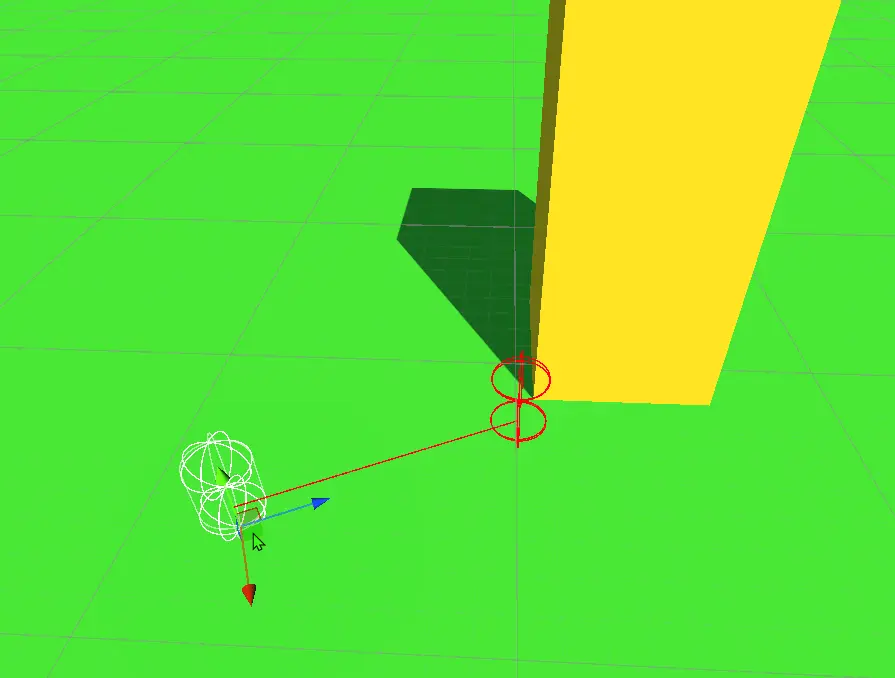
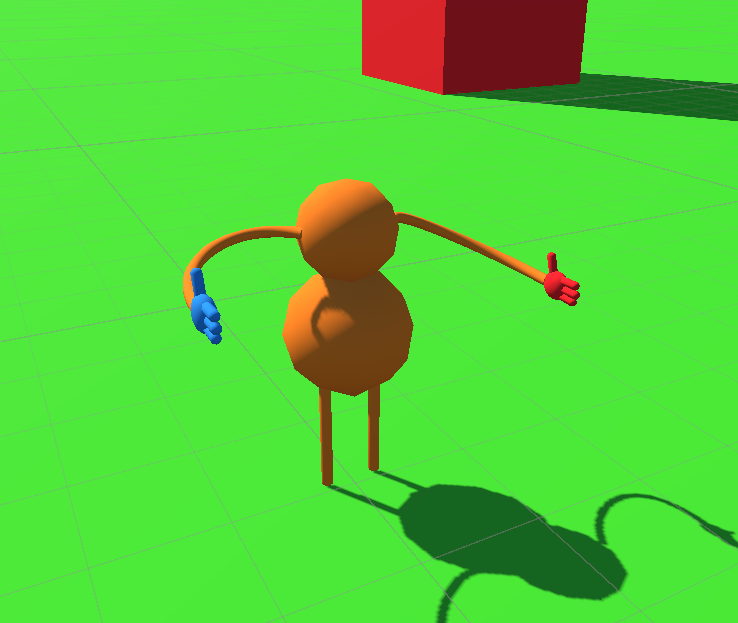
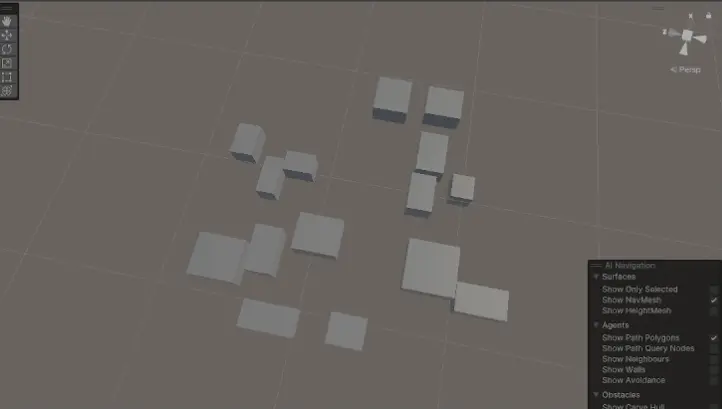
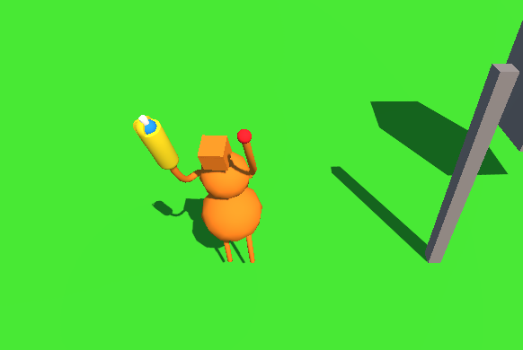
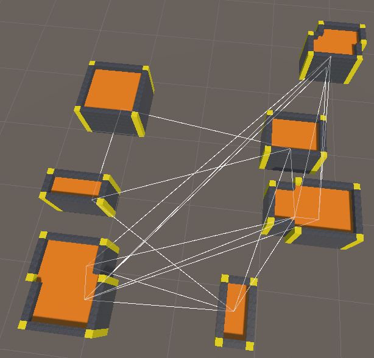
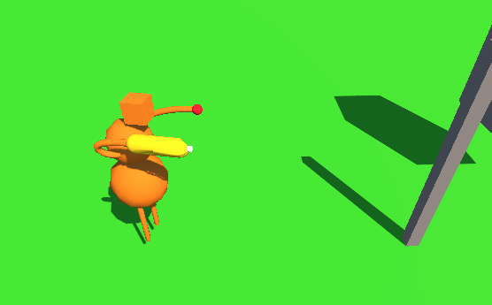
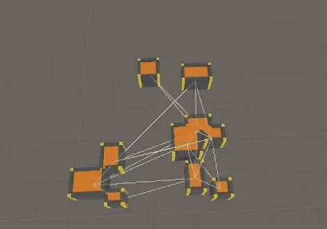
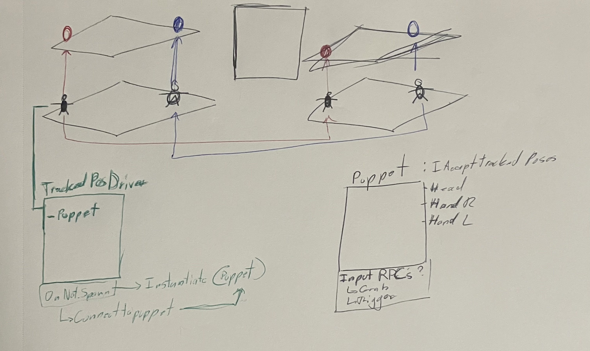

Contributions
Multiplayer Connectivity
Main Menu Scene
VR UI Sliders
Enemy UI
World Space UI
Sandbox Lobby Scene
In-Game Debugging Console
Multiplayer Connectivity
- Hosting lobbies and connecting clients with Unity's Netcode for Game Objects, Unity Lobby, and Unity Relay services.
- Ability for players to reconnect to previously joined lobby.
- Implemented logic for Local Area Network (LAN) or Wireless Area Network (WAN) connections between players.
World Space UI
- Created many world space menus like our Multiplayer Connections, Options Menu, and Dungeon Generator.
- Working with World Space UI to make it feel like it belongs in the scene has been a challenge.
- The players raycaster collides with box colliders of any world space UI within our game showing what they are currently pointing at.
Main Menu
- The main point for players to choose Singleplayer or Multiplayer.
- Players will spawn in here whenever they get disconnected from a session or start up the game.
- Fun Fact: This scene was where I started playing around with post processing effects.
Sandbox Lobby
- The main area where players can join/host lobbies, start their dungeon runs, and find a tutorial area to help introduce them to the game.
- Created testing enemies that players can test weapons and resistance values against.
- Created interactive controls menu that players can see where they are located on a 3D model.
Custom UI Prefabs
- Created a VR UI "Slider" that can be implemented for any values we need players to increase or decrease (ex. volume settings, resistance values).
- I started using
event System.Action variables to help give additional usage and functionality with the slider.
- Other prefabs consist of the Pause Menu, Player UI, and Damage Indicator (Flyoffs) Scripts.
Target Enemy UI
- Sliders for changing resistance values using my UI VR Sliders.
- Damage indication fly offs for players to know how much damage they dealt to enemies.
- Accounts for floating point error when displaying the damage indicator particles.
Tom's Collide and Slide Code in action!

Tom's player model starting out with VR!

Zach's initial Procedural Generation for the dungeon!

Tom fixing arm rotations! - Fig. A

Zach's Procedural Generation update - room connections!

Tom fixing arm rotations! - Fig. B

Zach's Procedural Generation update - room meshing!

Whiteboard planning example
